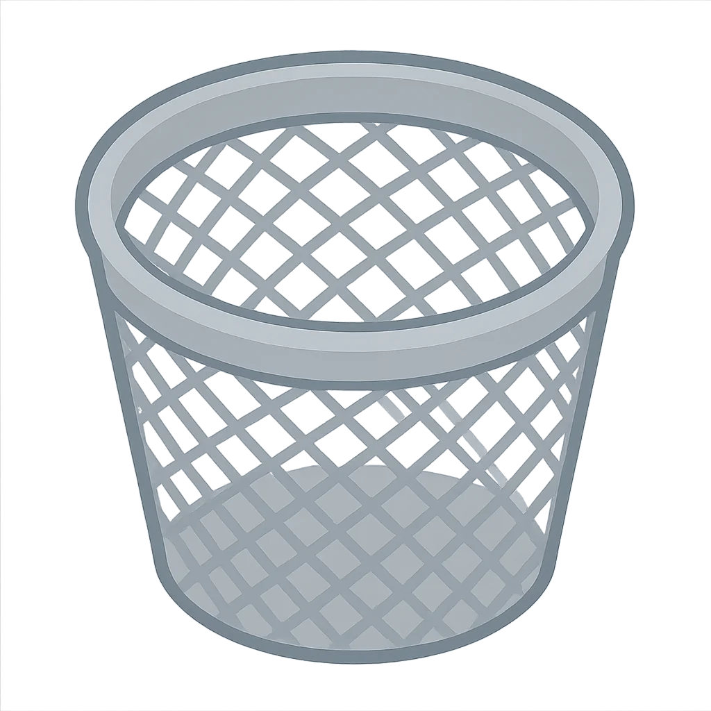
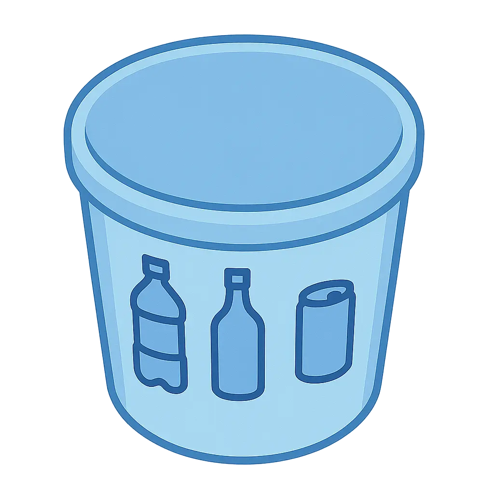
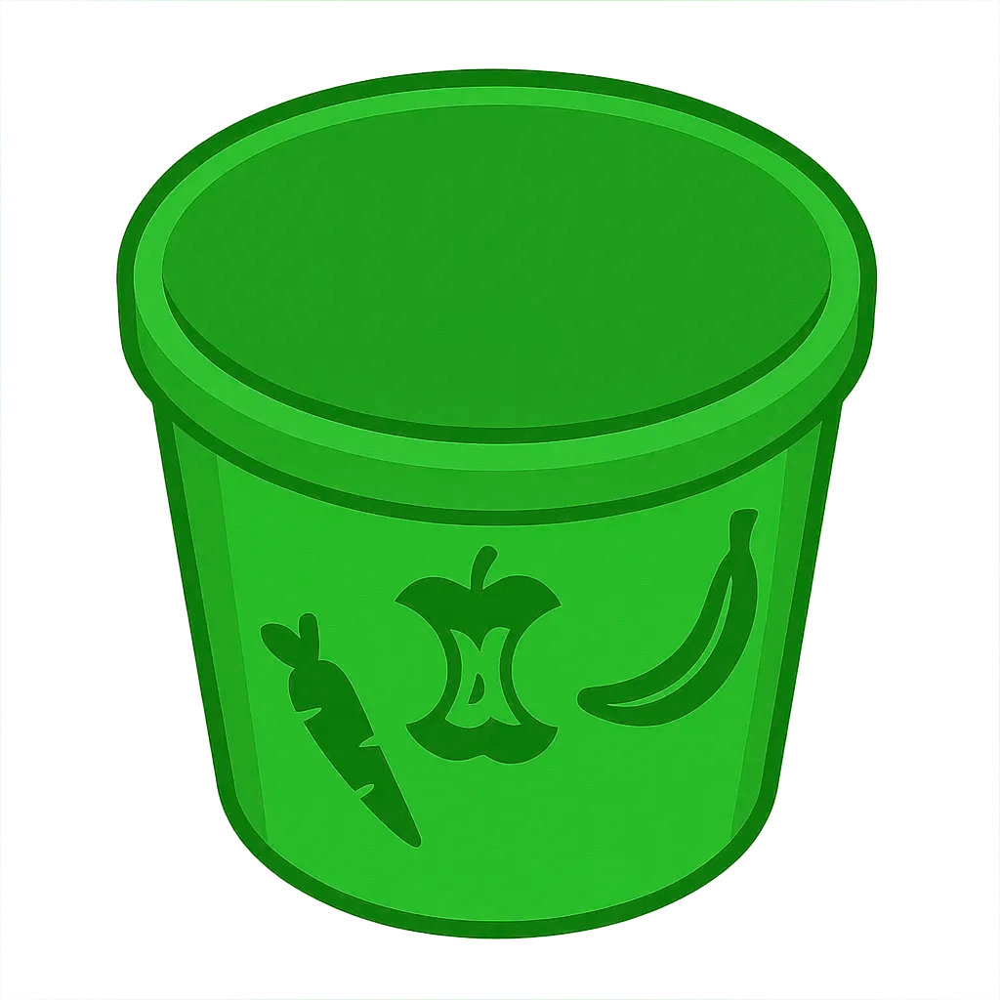

Clean up Davis!
Roll each bin around town and drop the right items into it. Press the space bar to swap between bins.

Trash
Landfill items: chip bags, plastic utensils, broken odds and ends.

Paper Recycling
Dry paper and cardboard like newspapers, mailers, and cereal boxes.

Bottles & Cans
Empty glass, metal, and plastic drink containers that can be rinsed.

Compost
Food scraps and yard waste: fruit peels, coffee grounds, wilted plants.